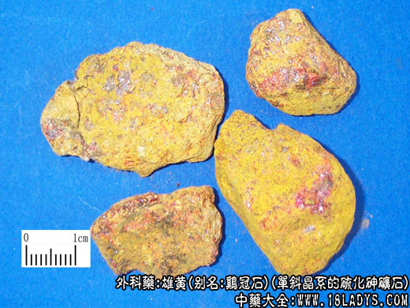

雄黄为较常用中药。始载《神农本草经》，列为中品。商品有雄黄与明雄黄两种。
别名：苏雄黄、鸡冠石。
来源：为单斜晶系的硫化砷矿石多分布于泥板岩或千页岩中，常与灰锑矿、砒石、铅矿、银矿、金矿等共生。雄黄在矿中质软如泥，见空气即变成块状体。
产地：主产于湖南、贵州、云南。此外陕西、四川、甘肃、山西等地亦产。
性状鉴别：
（1）雄黄：呈不规则的块片状，大小不一。全体深红色或橙红色，表面常附有橙黄色粉末。体重，质松脆易碎。断面粗糙，新断面橙红色与紫棕色相间，有光泽。研成细粉呈深黄色。不溶于水及盐酸；可溶于硝酸，溶液呈黄色。燃之易融成红紫色液体，并生黄白色烟，有强烈臭蒜气；冷却后熔融物凝成紫红色固体，质纯者凝成橙红色固体。气微异臭，味淡。
以色红，块大、质松，无石性者为佳。
（2）明雄黄：系选自雄黄中颜色鲜艳熟透者，又名雄精，多呈块状或颗粒状。桔红色，半透明，有光泽。质松脆。过去经加工后多随身佩带作装饰品，故又称“腰黄”。气味与雄黄相同。
以块大，桔红色，熟透者为佳。
主要成分：雄黄的主要成分为二硫化二砷，其中含砷约75%，硫24.9%，及其他少量重金属盐类。
药理作用：止痛解毒，实验观察还证明了有以下作用：
（1）抗结核菌。雄黄于1/100浓度时对人型、牛型结核菌均有抑制生长的作用。
（2）抗真菌。在试管内对红色表皮癣菌等皮肤真菌，有不同程度的抑制作用。
炮制：研成细粉，生用。
性味：苦、辛、温。有毒。
归经：入肝、胃经。
功能：解毒杀虫、燥湿祛痰。
主治：痈肿疮毒，疥癣，虫毒蛇伤，虫积腹痛，惊痫久疟等症。
临床应用：
（1）治神经性皮炎。用雄黄、斑蝥等制成雄黄合剂，外搽患处，有一定效果。
（2）治疮疡、疥癣。用雄黄、白矾各等份为末，水调或醋调外敷，有止痛除痒，消肿解毒作用。
（3）治瘙痒。如属于寄生虫，如蛲虫所引起的肛门瘙痒，可用雄黄、铜绿等分为末，外撒肛门处，有止痒驱虫作用；如为一般皮肤瘙痒，可配百部、苦参等，方如雄黄外洗方。
（4）治蛇咬伤。蛇咬伤后可用雄黄、五灵脂为末作患部外敷。另用雄黄1.5g、五灵脂4.5g研末，用酒调服，或配合其他蛇咬伤药物治疗。
用量：外用适量，内服0.15-0.3g，入丸散剂服，但不宜持续服。孕妇忌服。
使用注意：硫化砷遇热易分解为三氧化二砷，有剧毒，故雄黄忌火煅。
处方举例：
雄黄合剂：雄黄1.8g（研细末）斑蝥（不去头足）6g，鲜山楂30g，浸入95%酒精260毫升，放置七天后开始使用，局部外搽患处。
雄黄外洗剂：雄黄6g，百部15g，川椒9g，硼砂6g，苦参9g，水煎外洗。
注：
（1）雄黄撞碎的碎块及粉末，名雄黄末，又名苏尖（淘尖）与苏雄黄同等药用。
（2）过去尚有刁雄，为雄黄的提炼加工品。呈块状，色紫红，无光泽或微有光泽；质较坚硬，砸碎之，断面树脂状，不呈结晶状，常有细砂孔，微有特异臭气。产于四川、贵州、现商品少见。效用同雄黄。
（3）与硝酸钾相混，击之则爆炸。